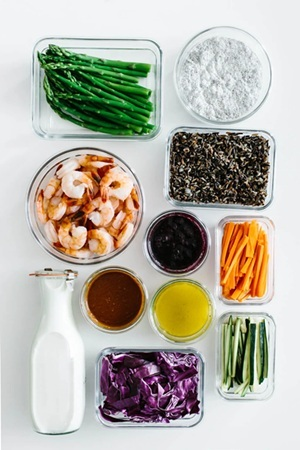

Simple Family Recipes
The recipe ideas on this page are meant to be simple, flexible, and easy to adjust based on what a family already has at home. Family Fork Weekly focuses on meals that are realistic for busy weeknights.

Recipes do not need to be complicated to be helpful. A good weekly recipe plan can include basic proteins, simple sides, and meals that can be reused for leftovers.
Recipe Categories
Family Fork Weekly organizes recipes into simple categories so visitors can quickly find meal ideas that fit their week.
Example Recipe Ideas
- Quick Weeknight Dinner: Chicken rice bowls with vegetables and sauce.
- One-Pan Meal: Sheet pan sausage with potatoes and green beans.
- Budget-Friendly Meal: Pasta with marinara, salad, and garlic bread.
- Leftover-Friendly Recipe: Taco bowls made with leftover chicken or beef.
Sample Recipe: Easy Chicken Rice Bowl
This simple chicken rice bowl is a flexible meal idea that can be changed based on what a family already has at home. It works well for busy nights because it uses basic ingredients and can be prepared quickly.
Ingredients
- Cooked chicken or another protein
- Rice or another grain
- Vegetables such as carrots, broccoli, peppers, or green beans
- A favorite sauce or seasoning
- Optional toppings such as cheese, salsa, or herbs
Basic Steps
- Cook rice or use leftover rice.
- Add cooked chicken or another protein.
- Top with vegetables.
- Add sauce and seasoning.
- Serve warm as an easy weeknight meal.